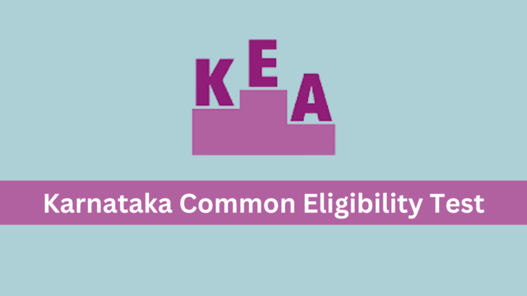

Helping students fulfil the potential
Study materials and opportunities
|
|
Helping students fulfil the potentialStudy materials and opportunities |
 |
 View Scholarships
View Scholarships
In today's world, education has become one of the most essential and expensive assets. Most high school pass outs look for financial assistance to pursue the career of their dreams that requires several years of education. In such a scenario, scholarships come up as the most desired form of financial aid. This is because, unlike educational loans, you don’t have to repay scholarships. If you are deserving, you can get scholarships on merit basis. This makes scholarships prestigious and also pays for your degree. You should definitely apply for scholarships in the college of your choice. After all, a scholarship comes with numerous benefits.
Below is the link for various scholarships
Along with the board exams , the competitive exams play a major role in getting admitted to top colleges in the state.
Since the 10th and 12th papers are not entirely enough for cracking the competitive exams, here are some question papers which is a great help for students
Here are some competitive exams which are conducted in Karnataka
The Karnataka Examination Authority (KEA) is authorized for conducting the yearly basis Karnataka Common Entrance Test also known as Karnataka UGCET. The purpose of this test is to offer admission to eligible students in Engineering, Bachelor of Pharmacy, Bachelor of Architecture, and other programmes. There are a total of 198 participating colleges which provide admission to students through KCET.
The Joint Entrance Examination (JEE) is an engineering entrance assessment conducted for admission to various engineering colleges in India. It is constituted by two different examinations: the JEE-Main and the JEE-Advanced.

JEE-Main is conducted by National Testing Agency (NTA). JEE-Main has two papers, Paper-I and Paper-II. Candidates may opt for either or both of them. Both papers contain multiple choice questions. Paper-I is for admission to B.E./B.Tech courses and is conducted in a Computer Based Test mode. Paper-II is for admission in B.Arch and B.Planning courses and will also be conducted in Computer Based Test mode except for one paper, namely the 'Drawing Test' which shall be conducted in Pen and Paper mode or offline mode. From January 2020 onwards, an additional Paper-III is being introduced for B.Planning courses separately.
JEE-Main, unlike JEE-Advanced, has a fixed exam structure and is not subject to change every year. Up until 2018, the JEE-Main Paper-I is of three hours duration and consists of thirty single choice questions in each of the three subjects (physics, chemistry and maths). 4 marks are awarded for correct answers and 1 mark is deducted for incorrect answers. Students taking this exam are usually in the age group 18-20.
JEE-Advanced is conducted for entry into 23 IIT's and some other equally prestigious universities like IISC Bangalore, IIST Thiruvananthapuram, Indian Institute of Petroleum and Energy (IIPE), Indian Institute of Science Education and Research (IISERs), Rajiv Gandhi Institute of Petroleum Technology (RGIPT). This exam is conducted by any one of the IIT's every year. In 2020, the exam was conducted by IIT Delhi. In 2021, 2022, and 2023, it shall be conducted by IIT Kharagpur, IIT Bombay and IIT Guwahati respectively. More than 2 lakh students become eligible to write JEE-Advanced every year. The top 250,000 students of JEE Main qualify to appear for the JEE-Advanced examination.

The National Eligibility cum Entrance Test (Undergraduate) or NEET (UG), formerly the All India Pre-Medical Test (AIPMT), is an all India pre-medical entrance test for students who wish to pursue undergraduate medical (MBBS), dental (BDS) and AYUSH (BAMS, BUMS, BHMS, etc.) courses in government and private institutions in India and also, for those intending to pursue primary medical qualification abroad.
The exam is conducted by National Testing Agency (NTA), which provides the results to the Directorate General of Health Services under Ministry of Health and Family Welfare and State Counselling Authorities for seat allocation
There are a total of 180 questions asked in the exam, 45 questions each from Physics, Chemistry, Botany and Zoology. Each correct response fetches 4 marks and each incorrect response gets -1 negative marking. The exam duration is 3 hours 20 minutes (200 min). The exam is of 720 marks (maximum marks). Since 2021, there has been a significant alteration in the format of the question paper. The latest structure includes two sections, i.e. A and B, in all four subjects, namely Physics, Chemistry, Botany, and Zoology. Section A comprises 35 mandatory questions, while Section B contains 15 questions, out of which 10 questions are to be answered, leading to a total of 200 questions, with 180 questions that can be answered.
Click for NEET papers